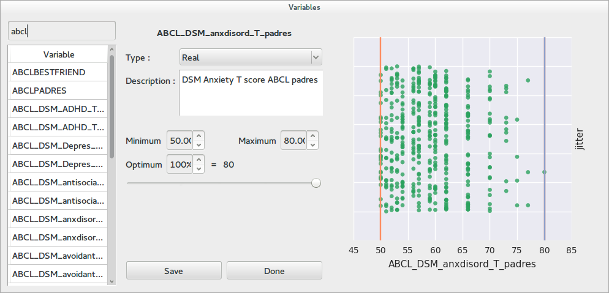

Braviz Qt Dialogs¶
This module contain several dialogs that should be used across applications to provide a consistent experience.
Select Variables¶
{kind=link}
A common task in Braviz is navigating the variable database and selecting variables of interest.
The variable select dialog provides an overview of the data distribution at the right side, a panel where variable meta data can be reviewed and updated in the middle, and a variable list which can be searched at the left.
However there are several variations of this dialog which are appropriate for different tasks.
- class VariableSelectDialog(sample=None)¶
Abstract, Implement common features for Outcome and Regressor Dialogs
This class is incomplete, in order to get a full dialog consider using one of the inherited classes.
In particular there is no ui associated with this class, in subclasses you should add a UI and then call finish_ui_setup
Parameters: sample (list) – Optional, list of subject indices to include in plot, if None, the whole sample is displayed
- class GenericVariableSelectDialog(params, multiple=False, initial_selection_names=None, initial_selection_idx=None, sample=None)¶
A dialog for selecting one or multiple variables with initial selection.
This dialog is optimized for multiple selections, and it improves OutcomeSelectDialog in that
- In the multiple mode, the output dictionary includes a checked field with the codes of the selected variables
- In the multiple mode, initial selections can be set using the initial_selection_names and initial_selection_idx parameters in the constructor.
Parameters: - params (dict) – Output will be written in this object
- multiple (bool) – If True, allows to select multiple variables by placing checkmarks
- initial_selection_names (list) – List of variable names which should be selected when the dialog opens
- initial_selection_idx (list) – List of variable indeces which should be selected when the dialog opens
- sample (list) – Optional, list of subject indices to include in plot, if None, the whole sample is displayed
- class OutcomeSelectDialog(params_dict, multiple=False, sample=None)¶
A dialog for selecting a single or multiple variable
The constructor takes a dictionary which will be used to save the selection in the dialog. When the user clicks the save and select button, the dialog will close, and the current selection will be available in the selected_outcome field of the dictionary.
If you need multiple variables consider using GenericVariableSelectDialog.
If multiple = True is passed to the constructor the variable list will have check marks. The output dictionary will still contain only one variable, but the list is available in the vars_list_model field. You may get a set of selected variables by calling dialog.vars_list_model.checked_set
The constructor also takes a sample parameter which can be used to set the sample used in the right side plot.
Parameters:
- class MultiPlotOutcomeSelectDialog(params_dict, sample=None, available_plots=None)¶
A dialog for selecting one variable with multiple plot options
The selected variable will be available in the selected_outcome field of the params_dict dictionary.
The constructor takes the available_plots argument, which contains a list of plots to make available in the dialog. This list should contain tuples of the following types
- ("scatter", None) : The default plot, x is the variable, and y is jitter
- ("scatter", var) : An scatter plot in which x is variable var and y is the current variable.
- ("box",var) : A box plot using variable var for groups and the current variable for values
- ("interaction", vars) : A two factor box plot where the groups are the interaction between the variables in vars , which is a string with an * between the two names.
Parameters:
- class SelectOneVariableWithFilter(params, accept_nominal=True, accept_real=True, sample=None)¶
A dialog for selecting one variable of an specific kind.
This dialog behaves likes the OutcomeSelectDialog, but you may choose to accept only nominal or only real variables using the parameters accept_real and accept_nominal of the constructor.
Parameters: - params (dict) – Output will be written in this object
- accept_nominal (bool) – If False the select button will be disabled for nominal variables
- accept_real (bool) – If False the select button will be disabled for real variables
- sample (list) – Optional, list of subject indices to include in plot, if None, the whole sample is displayed
- class RegressorSelectDialog(outcome_var, regressors_model, sample=None)¶
Dialog for selecting a secondary variable in the analysis.
The outcome_var parameter of the constructor may be used to specify a variable of reference. The default plot would have current variable in the x axis and the outcome_var variable in the y axis. If outcome_var is None, the y axis will be jitter.
The regressors_model parameter should be an instance of AnovaRegressorsModel. Variables will be added to and removed from the model using the dialog.
This dialog also allows the user to sort the variables according to a ginni index over the outcome_var
Parameters: - outcome_var (str) – Variable to use as reference. It will be the y axis of plots, look above for more uses
- regressors_model (braviz.interaction.qt_models.AnovaRegressorsModel) – All operations will update this model
- sample (list) – Optional, list of subject indices to include in plot, if None, the whole sample is displayed
- class ContextVariablesSelectDialog(variables_list=None, current_subject=None, editables_dict=None, sample=None)¶
A dialog for selecting multiple variables, and make some of them editable
Parameters: - variables_list (list) – List of variables indices to include in the current selection
- current_subject – This subject will be highlighted in plots
- editables_dict (dict) – This dictionary will contain which variables were selected to be editable keys are variable indices and values are booleans
- sample (list) – Optional, list of subject indices to include in plot, if None, the whole sample is displayed
Scenarios¶
These dialogs are used to write and load scenarios in all applications.

- class LoadScenarioDialog(app_name, out_dict=None)¶
Dialog that shows the user a list of available scenarios, with screen-shots, and allows him to select one
Parameters:
- class SaveScenarioDialog(app_name, state, params=None)¶
A dialog for saving scenarios, it doesn’t save an screen-shot, this should be done afterwards by the application
Parameters: - app_name (str) – Name of application for which the scenario is created
- state (dict) – Dictionary of application state
- params (dict) – Optional, when the dialog closes, this object will contain the key scn_id and its value will be the index of the newly created scenario. Use this to save a corresponding screen-shot
Bundles¶
- class BundleSelectionDialog(selected, names_dict)¶
Selects a set of bundles
Parameters:
- class LoadLogicBundle¶
Loading a logic bundle from the database
The dialog shows a preview of the tree associated with the bundle This tree will be available in the data attribute after the selection is accepted
- class SaveFibersBundleDialog(checkpoints_list, operation_is_and)¶
Save a bundle defined from a list of models
The dialog asks for a name and a description, it also shows the list of structures and the operation.
Parameters:
- class SaveLogicFibersBundleDialog(tree_model)¶
Saves a logic bundle
This dialog shows a tree summarizing the dialog and it asks for a name and a description
Parameters: tree_model (braviz.interaction.logic_bundle_model.LogicBundleNode) – Tree of the bundle
Other¶
- class InteractionSelectDialog(regressors_model)¶
A dialog for specifying interactions between variables
The top panel contains a list of current variables, and the bottom panel contains a list of interaction terms The user may select two or more variables and click Add single term to add the product of the selected variables to the list of interactions. Clicking Add all combinations will add all possible combinations to the list.
All operations will update the specified regressors_model, which should be an instance of AnovaRegressorsModel
Parameters: regressors_model (braviz.interaction.qt_models.AnovaRegressorsModel) – All operations will update this model
- class NewVariableDialog¶
A dialog for creating new variables
The dialog contains fields for entering a variable name and metadata, as well as a table view where values can be entered.
The dialog attempts to save the variable into the database, and if it fails shows an error message and lets the user change the variable name